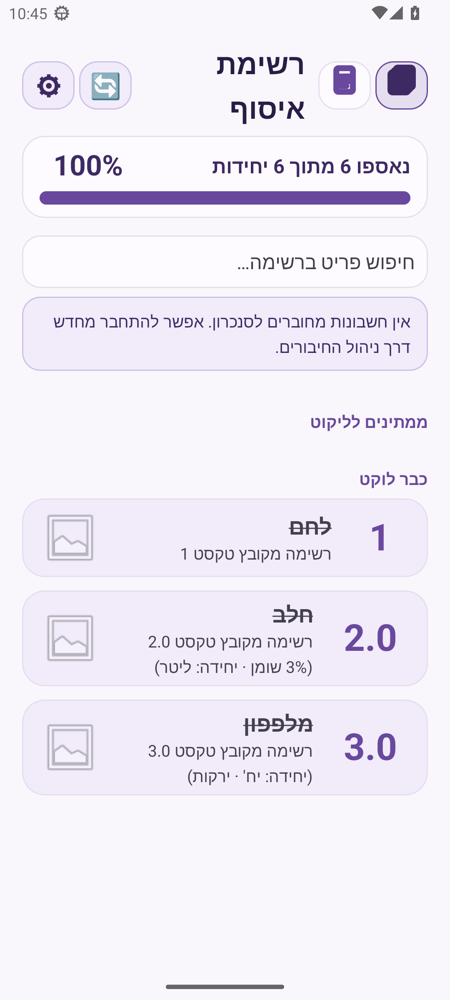
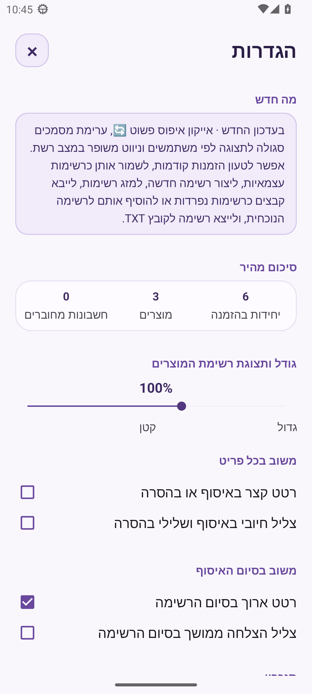
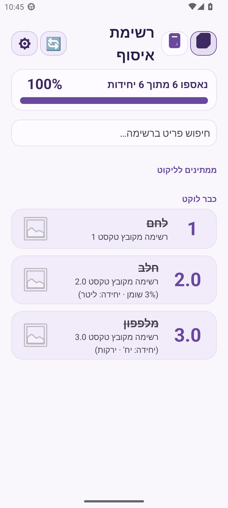
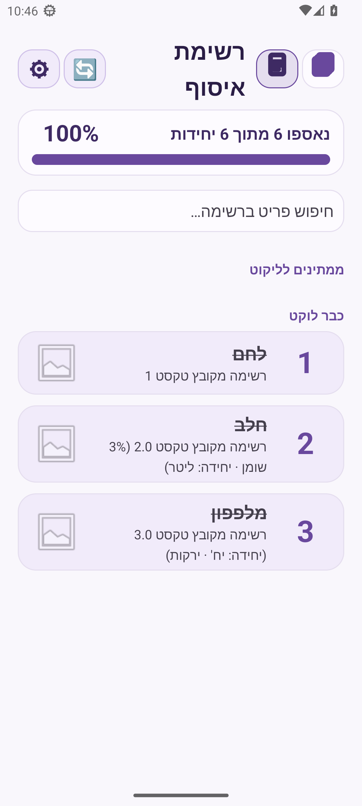
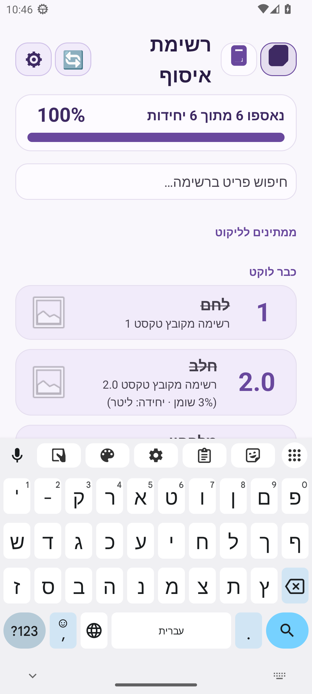
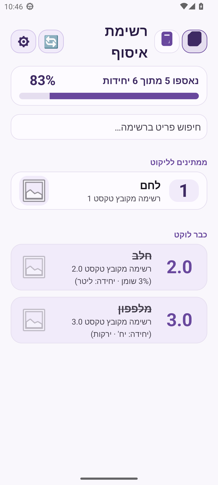
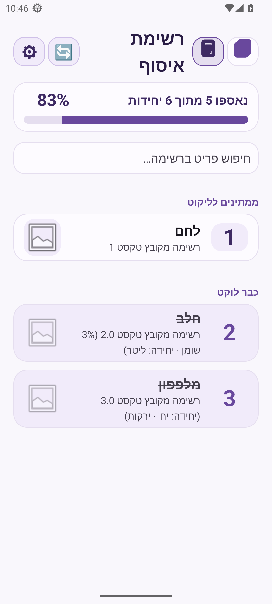
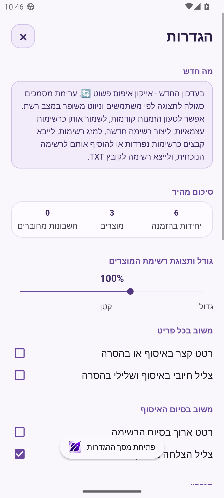

Package org.mishnatyosef.pickup · {"model": "sdk_gphone64_x86_64", "sdk": "33", "release": "13", "abi": "x86_64", "locale": "", "screen": "1080x2400"}
| # | Action | Detail | Result | Error |
|---|---|---|---|---|
| 1 | explore-tap | ⚙ / הגדרות | passed | |
| 2 | explore-tap | × / סגירת ההגדרות | passed | |
| 3 | explore-tap | ⚙ / הגדרות | passed | |
| 4 | explore-tap | רטט ארוך בסיום הרשימה | passed | |
| 5 | explore-tap | צליל הצלחה ממושך בסיום הרשימה | passed | |
| 6 | explore-tap | רשימה מאוחדת | passed | |
| 7 | explore-tap | ⚙ / הגדרות | passed | |
| 8 | explore-tap | רשימה מאוחדת | passed | |
| 9 | explore-tap | רשימה לפי חשבון | passed | |
| 10 | explore-tap | רשימה לפי חשבון | passed | |
| 11 | explore-tap | חיפוש פריט ברשימה… | passed | |
| 12 | explore-tap | ⚙ / הגדרות | passed | |
| 13 | explore-tap | לחם, כמות 1, לוקט | passed | |
| 14 | explore-tap | ⚙ / הגדרות | passed | |
| 15 | explore-tap | רשימה מאוחדת | passed | |
| 16 | explore-tap | ⚙ / הגדרות | passed |







